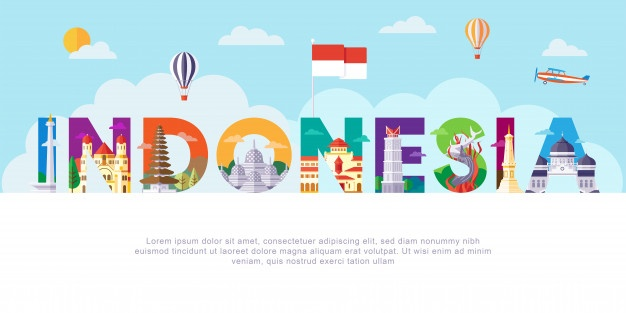

negaraku
terletak di 6 LU-11 LS dan 95 BT-141 BT membuat negara satu ini
sebagai silang jalur perdagangan dunia dan mengalami dua musim
saja setiap tahunnya.Hutan yang lebat dan luas menjadikan indonesia
sebagai negara paru-paru dunia.Beragam agama,budaya,suku,dan bahasa.
Indonesia merupakan Negara dengan bahasa daerah terbanyak didunia.
Tercatat berdasarkan laporan penelitian The Summer Institute of Linguistic,
sebagaimana dikutip Buku Pesona Bahasa (2006), terdapat 726 bahasa
daerah diseluruh wilayah nusantara.
penganut agama kira-kira 85,1% dari 240.271.522. penduduk Indonesia adalah
pemeluk Islam, 9,2% Protestan, 3,5% Katolik, 1,8% Hindu, dan 0,4% Buddha.
Terdapat lebih dari 300 kelompok suku bangsa.Tak jarang keberagaman tersebut
memicu terjadinya konflik antara suku satu dengan suku lainnya contohnya
suku Dayak dan suku Madura.